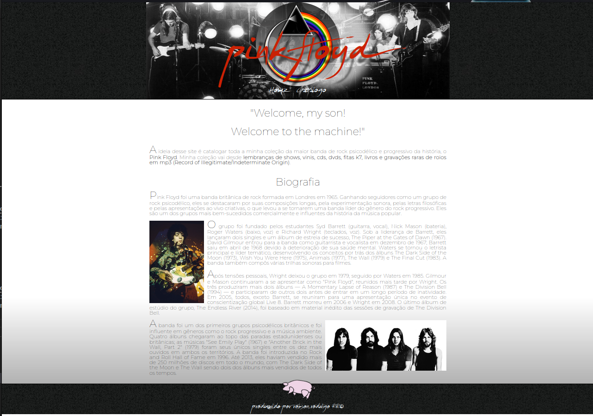
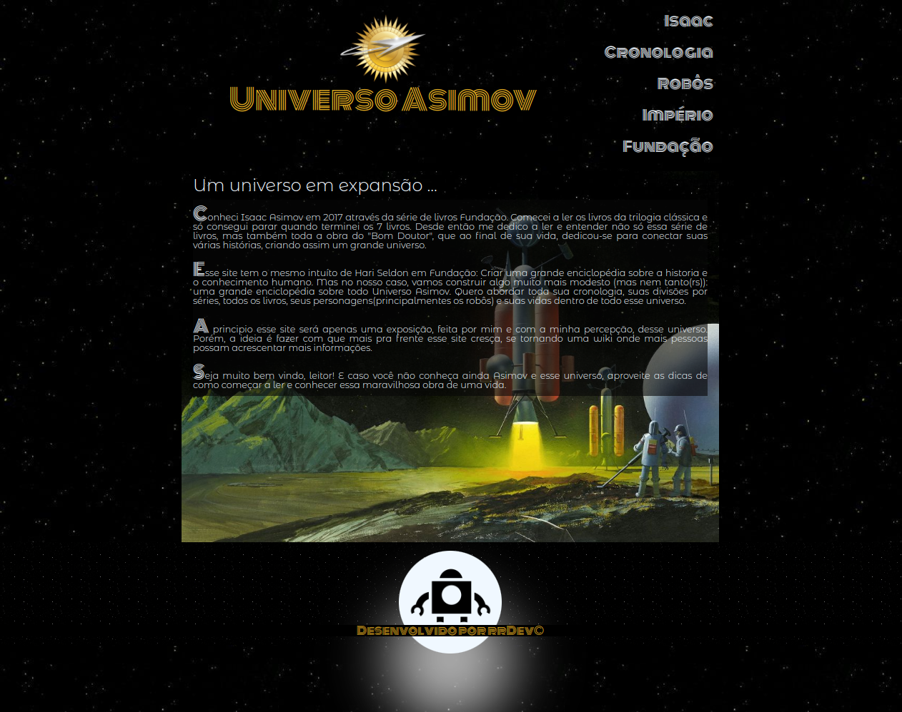

Projetos
- 
- Floydiscografia
- https://floydiscografia.netlify.app/index.html
- A ideia inicial é que a principio o site seja apenas um projeto visual feito em html e css catalogando toda a minha coleção do Pink Floyd.
- Numa segunda fase quero evoluí-lo trazendo os dados dos meus albuns através de uma api json, utilizando JavaScript.
- Já numa terceira fase a ideia é criar um banco de dados com todas as informações e imagens do site, que serão tratados inteiramente no back end, provavelmente em node.js e apresentado no front através de uma api.
- 
- Universo Asimov
- https://universoasimov.netlify.app/index.html
- Um site enciclopédia feito em html e css sobre o universo dos livros de Isaac Asimov e sobre o autor. A ideia é que com mais conhecimento esse projeto a longo prazo se torne uma wiki brasileira sobre o universo Asimov, mais especificamente uma wiki das séries Robôs, Império e Fundação.